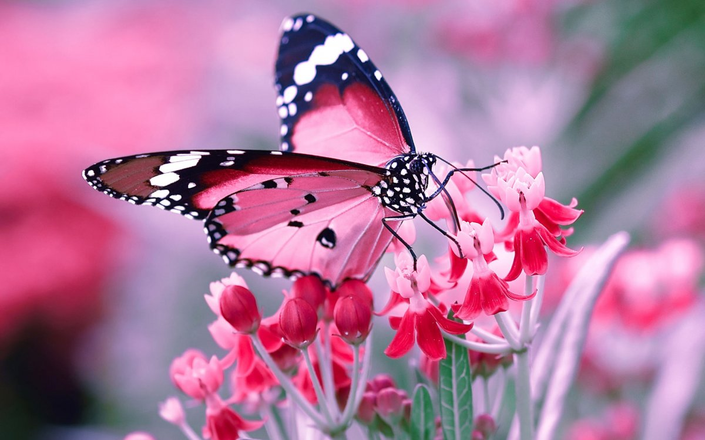
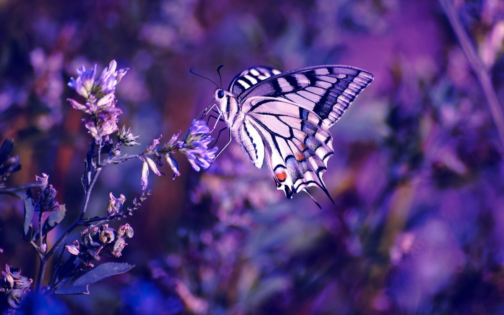
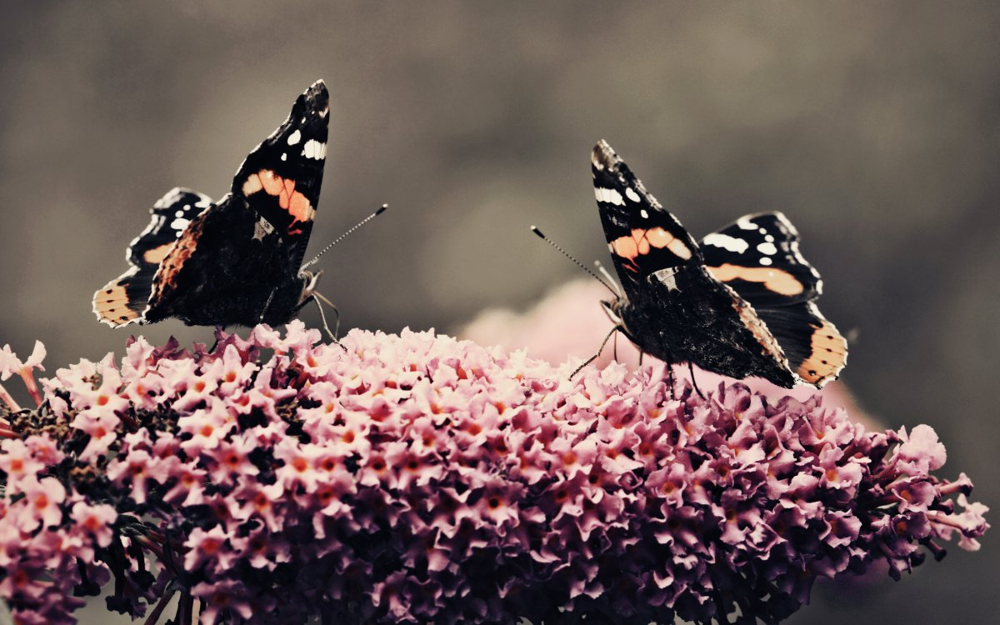

Ось такі вони метелики! Вони бувають різні: загадкові і прості, красиві і не дуже, маленькі і великі, є серед них вампіри і лікарі, а є помічники бджіл. Але ми любимо їх всякими, тому, що будь-які вони нам доставляють радість.
  